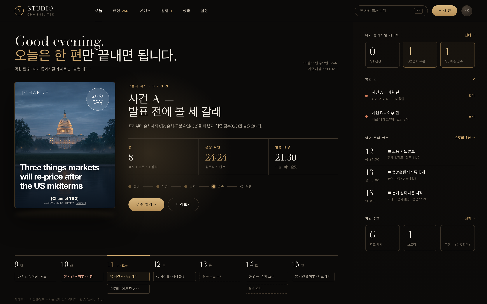
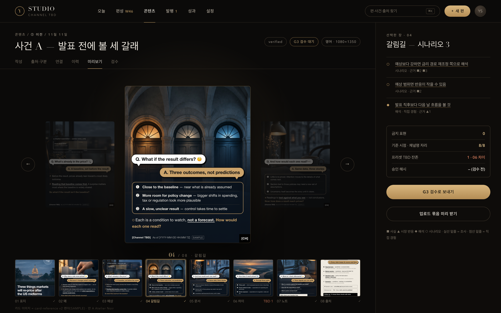
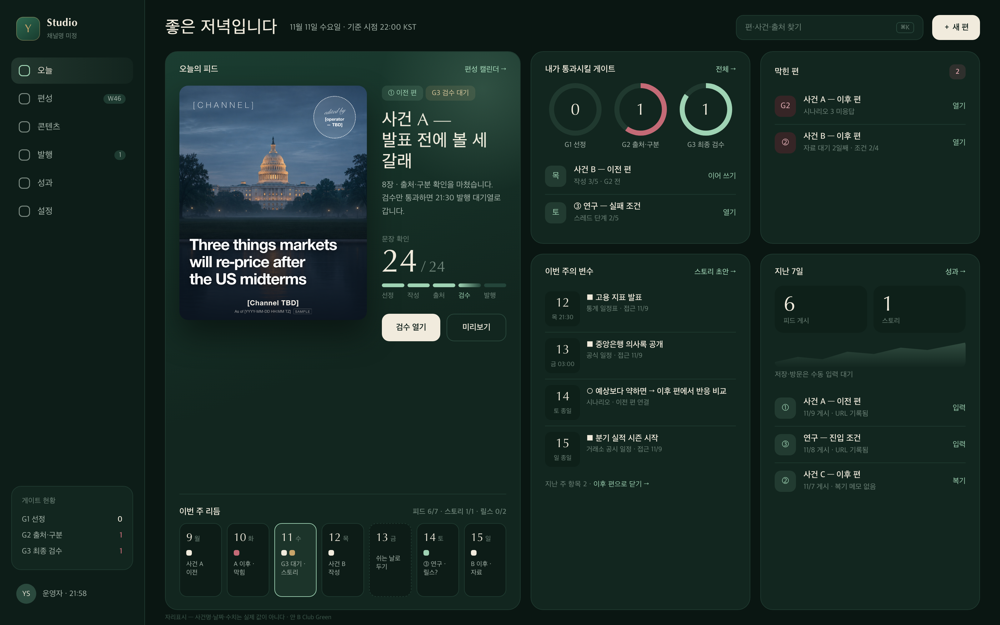
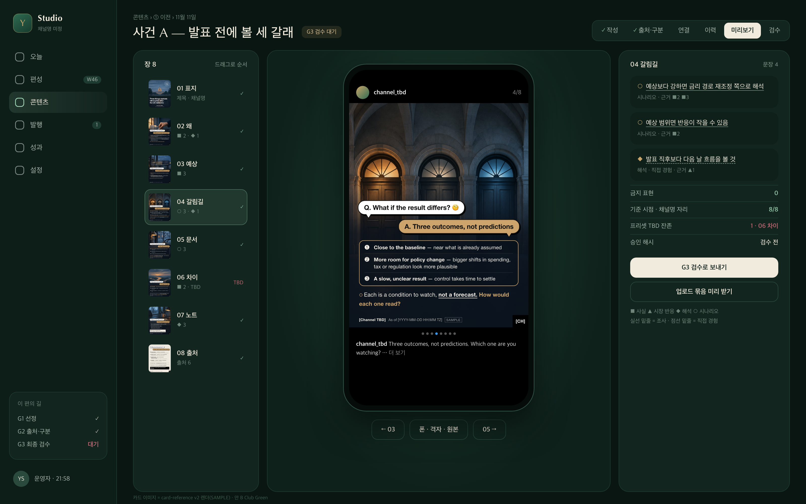
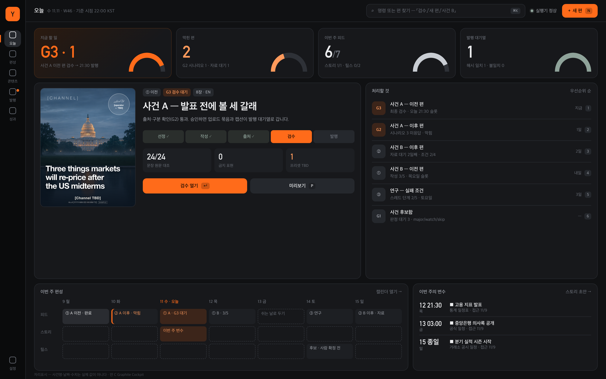
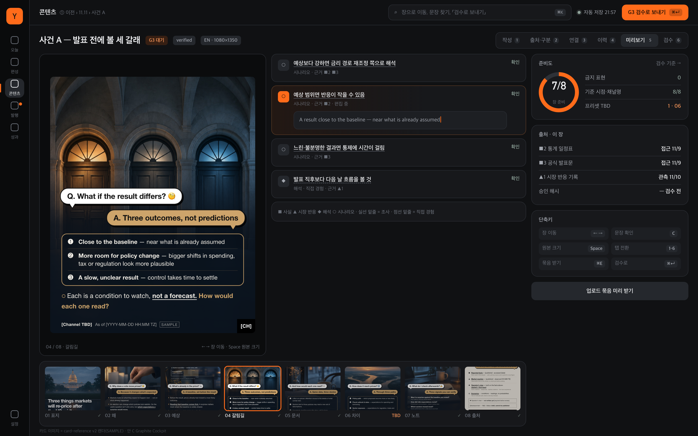

11/4 반려(Broadsheet·Terminal·Swiss)의 문법을 쓰지 않고 새로 수집한 레퍼런스 28개(무드보드)에서 출발했다. 목표 톤: 돈 많은 남성 비즈니스 오너의 개인 스튜디오 — 댄디·컴팩트·그럴듯하게, 그러나 바로 쓰기 쉽게.
각 안은 같은 두 화면 — ① 홈(오늘) ② 카드뉴스 편집·미리보기 — 이고, 미리보기에는 카드 v2 렌더 8장을 실제로 넣었다. 문구·수치는 자리표시. 이미지를 누르면 원본 크기(3200×2000).






| A Atelier Noir | B Club Green | C Graphite Cockpit | |
|---|---|---|---|
| 있어 보임(간지) | 가장 강함 | 강함 · 절제 | 보통 · 기술적 |
| 댄디함 | 보통 — 화려 | 가장 강함 | 약함 |
| 컴팩트·정보 밀도 | 낮음 | 중간 | 가장 높음 |
| 바로 쓰기 쉬움 | 쉬움(한 편 중심) | 쉬움(칸 = 우선순위) | 익숙해지면 가장 빠름 |
| 흔해질 위험 | 블랙+골드 흔함 | 낮음 | 다크 대시보드 흔함 |